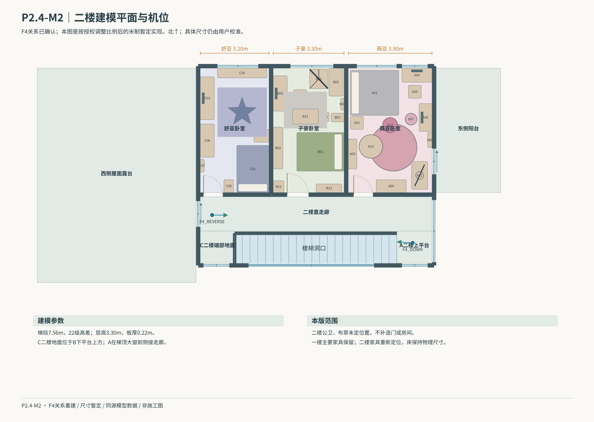

P2.4-M2｜F4重建对照P2.4-M2 · 按已确认F4关系重建
按你的授权调整二楼房间宽深比例：护栏仅沿实际梯段洞口；C为二楼端部地面，B在其下方，A在梯顶大窗前。二楼仅保留三道卧室木门。
打开可旋转白模 · Blender · GLB · 已确认F4关系图
本轮为关系重建模型，尺寸暂定。二楼公卫、布草未定位，未补造房间。二楼缩窄产生西侧屋面露台，外立面需后续核对。连续路线可在模型中播放，完整视频与全空间无盲角验收尚未完成。
本轮模型对应的二楼平面（尺寸暂定）

原始参考 · 别墅二楼到楼梯间参考图（俯拍图）.png

原始参考 · 别墅二楼走廊.png

原始参考 · 别墅楼梯间参考.png